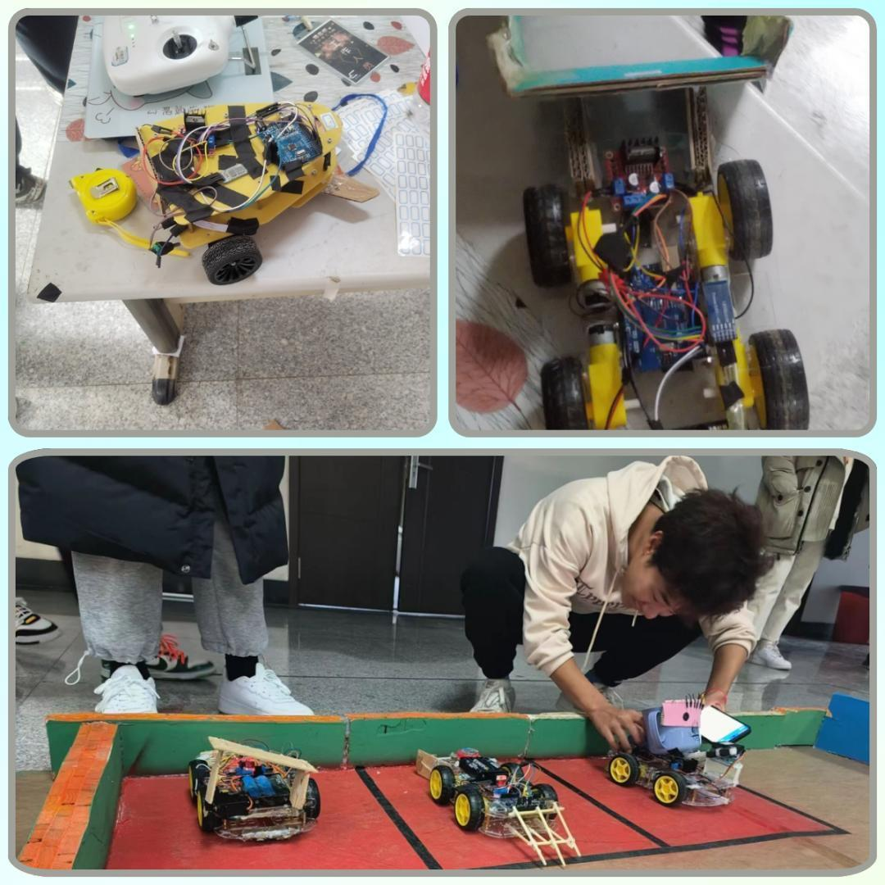
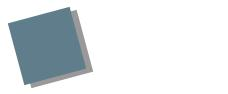
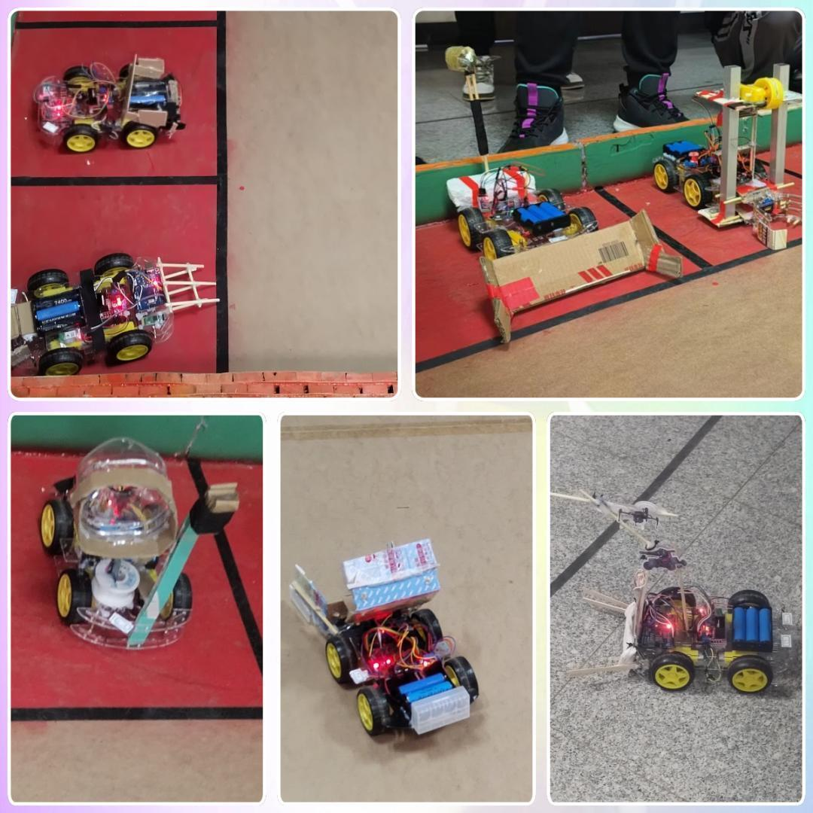
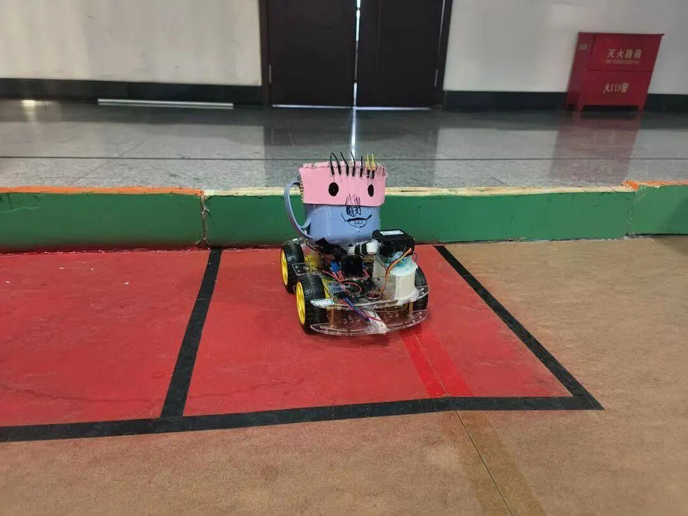
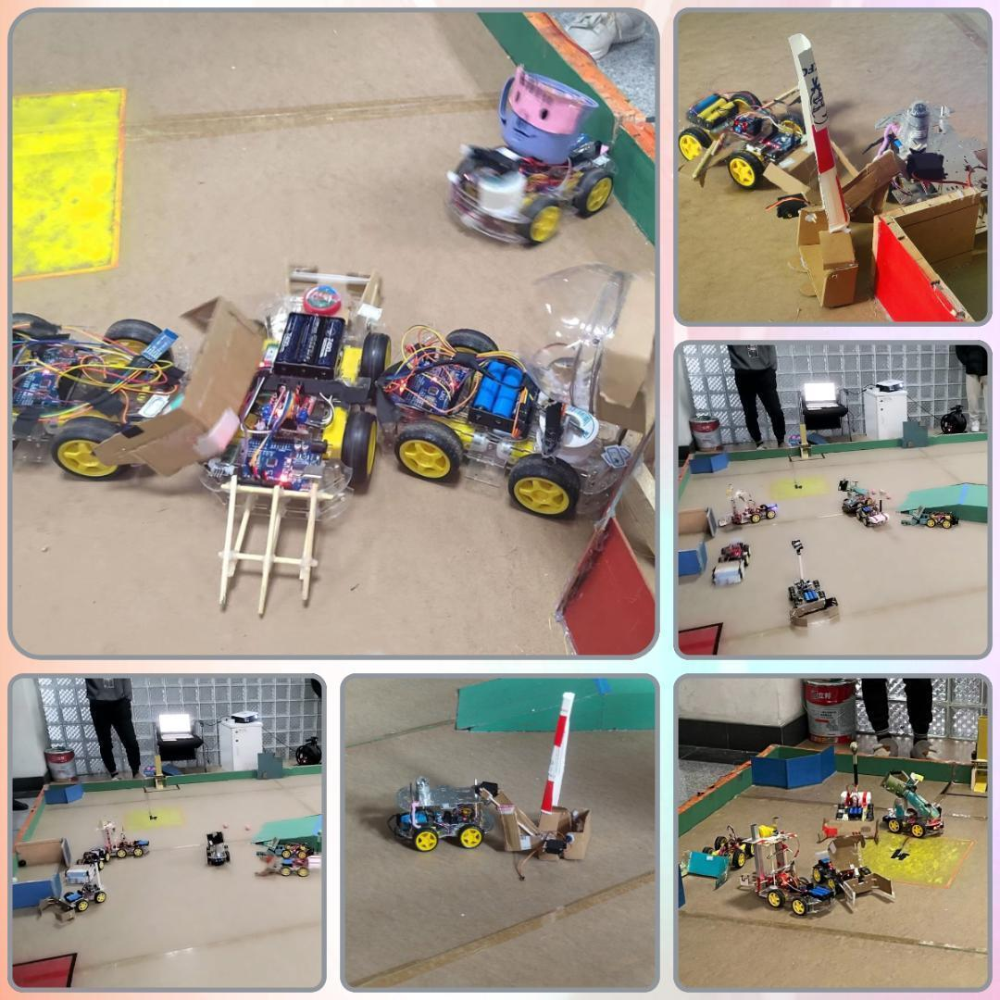
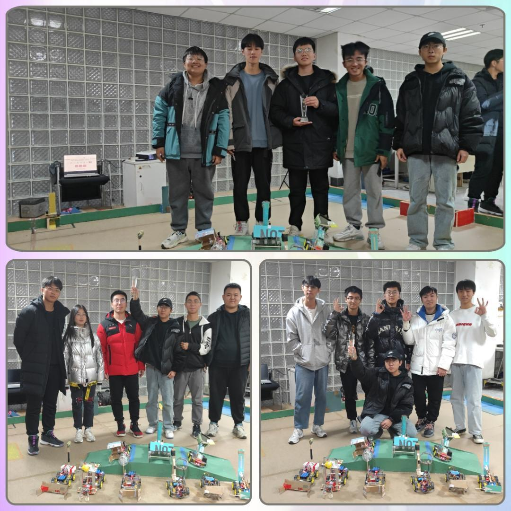
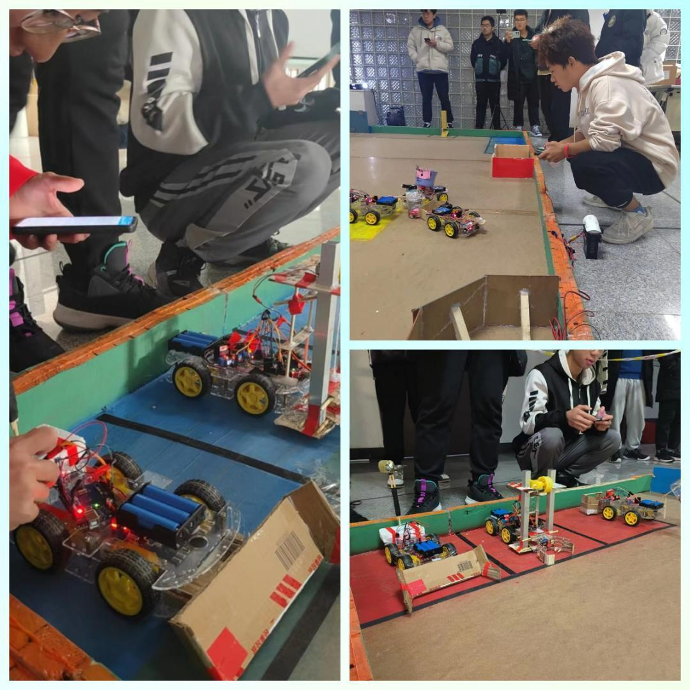
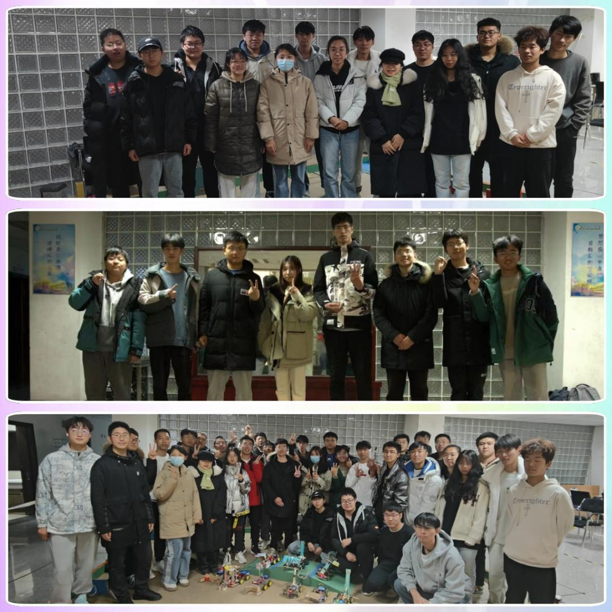
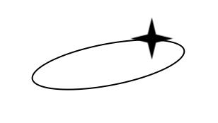

第八届理工杯圆满结束
技术让梦想成为艺术。伴随着最后一场比赛的结束，第八届理工杯大赛圆满落幕。我们看到了更多与往届不同的机器人，令人惊叹的作战技巧。这不仅仅意味着选手们水平的提高，更体现出赛事水平的进步。


比赛现场队员不断调试机器人，参加检录。



不止有帅气的小车，还有很可爱的小车！



有没有感受到比赛的激烈呢？

比赛时选手们控制他们的小车在赛场上战斗。这不仅仅是一场技术的较量，也是一次战术的比拼；这不单是一场机器人与机器人的较量，还是一场心里的博弈。

首先恭喜云雨耀辉战队获得冠军
美少女战队获得亚军
整大活战队获得季军

他们用自己精湛的技术与不懈的努力，战胜一个又一个强大的对手，最终在理工杯会当凌绝顶，一览众山小。
这一路上经历了许多，由于疫情原因许多教学都在线上进行，在这段时间里学到了很多知识，收获了友谊。没有留下任何遗憾！
同时，本届理工杯大赛的顺利进行，离不开每一位工作人员的辛苦与努力。


让我们期待下一次的相遇吧！


每一次结束，都是全新的开始。让我们感谢本次所有人的付出，也期待组委会的精益求精，共同展望下一次理工杯！
排版|子沐
文案|子沐
图片|沈理电协
审核|恩嘉